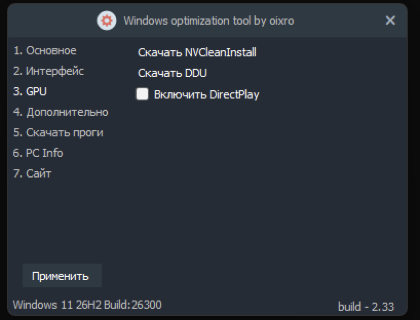

Основные твики
Настройки реестра, схема питания, гибернация, файл подкачки, MPO, USB, Spectre/Meltdown и приоритеты процессов.
WOTBO — лёгкий инструмент тонкой настройки системы: 48 твиков реестра, интерфейса и GPU, очистка и откат изменений в один клик.
Windows 10 / 11 · x64 · 0,5 МБ · открытый исходный код
Шесть разделов, 48 твиков — от реестра до установки программ.
Настройки реестра, схема питания, гибернация, файл подкачки, MPO, USB, Spectre/Meltdown и приоритеты процессов.
Профили NVIDIA, DirectPlay, отключение HDCP и Ansel, установка NV CleanInstall и DDU в один клик.
Временные файлы, WinSxS, кеш обновлений, CompactOS и удаление OneDrive.
Отключение Windows Defender и восстановление защитника обратно, когда он снова нужен.
Синие папки, полупрозрачный проводник, старая шапка проводника, контекстное меню Windows 11 и анимации.
23 программы: 7-Zip, OBS, Discord, Telegram, Chrome, HWiNFO, CrystalDiskInfo и другие.
Никакой установки — скачали и настроили.
Один portable-файл WOTBO.exe, без установщика и аккаунтов.
Отметьте нужное на шести вкладках. У каждого пункта есть подсказка.
Программа меняет систему и пишет лог: видно, что именно произошло.
Передумали — верните исходные значения тем же переключателем.
Три раздела из шести — так это выглядит в программе.



Видео по настройке и использованию программы.
Всё, что нужно для запуска.
Windows 10 или Windows 11, x64.
.NET Framework 4.8 — уже входит в Windows 10 и 11.
Запуск от имени администратора: твики меняют реестр и системные файлы.
Не нужна: один exe, около 0,5 МБ.